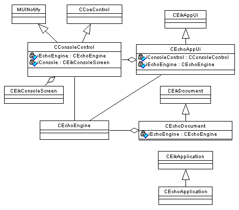

|
| |
eikecho is a GUI application. It allows the user to drive the echoeng DLL from a very simple user interface.
The following diagram shows its class structure:

Structure of eikecho
Some notes follow on the classes.
CEchoApplicationCEchoApplication is the application class, derived from CEikApplication as demanded by the framework.
|
CEchoDocumentCEchoDocument is the document class, derived from CEikDocument as demanded by the framework. It owns an instance of the engine class CEchoEngine.
|
CEchoAppUi is the app UI class, derived from CEikAppUi as demanded by the framework. It handles user interface commands, of which eikecho has only one, File | Exit, which has the identifier EEikCmdExit. The code for this calls CEchoEngine::Stop() to shutdown the connection.
void CEchoAppUi::HandleCommandL(TInt aCommand)
{
switch (aCommand)
{
case EEikCmdExit:
iEchoEngine->Stop();
Exit();
}
}
Note that calls to the user interface handling functions implemented by this class and by CConsoleControl are made by an active scheduler in the application framework, as a result of user interface events being raised. The same active scheduler calls the handler (RunL()) functions for the echoeng active objects when asynchronous socket calls complete. So long as the handler functions do not take an excessive time to complete, this structure allows the application to remain responsive to both sources of events.
|
CConsoleControl
CConsoleControl is the application view class, CExampleAppView, derived from CCoeControl. Its most important function is OfferKeyEventL(), which calls CEchoEngine functions based on the key pressed. For example, pressing “#” causes the engine to make a connection to the IP address held in KInetAddr:
TInt aChar=aKeyEvent.iCode;
if (aChar == '#')
{
_LIT(KConnecting1,"Connecting to KInetAddr\n");
iConsole->Printf(KConnecting1);
iEchoEngine->ConnectL(KInetAddr);
}
Copyright ©2002 Symbian Ltd. 6.1-00174 |
|